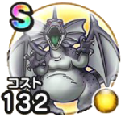

デスアンドレアル
ドラクエ4神官クリフト外伝こころ最大コスト+4スキルの斬撃ダメージ+3%デイン属性斬撃・体技ダメージ+5%ドラゴン系へのダメージ+5%幻惑耐性+5%ターン開始時HPを10回復する / 6.5点
くわしい特徴
【ランク特殊効果】 こころ最大コスト+4スキルの斬撃ダメージ+3%デイン属性斬撃・体技ダメージ+5%ドラゴン系へのダメージ+5%幻惑耐性+5%ターン開始時HPを10回復する

ドラクエ4神官クリフト外伝こころ最大コスト+4スキルの斬撃ダメージ+3%デイン属性斬撃・体技ダメージ+5%ドラゴン系へのダメージ+5%幻惑耐性+5%ターン開始時HPを10回復する / 6.5点
【ランク特殊効果】 こころ最大コスト+4スキルの斬撃ダメージ+3%デイン属性斬撃・体技ダメージ+5%ドラゴン系へのダメージ+5%幻惑耐性+5%ターン開始時HPを10回復する